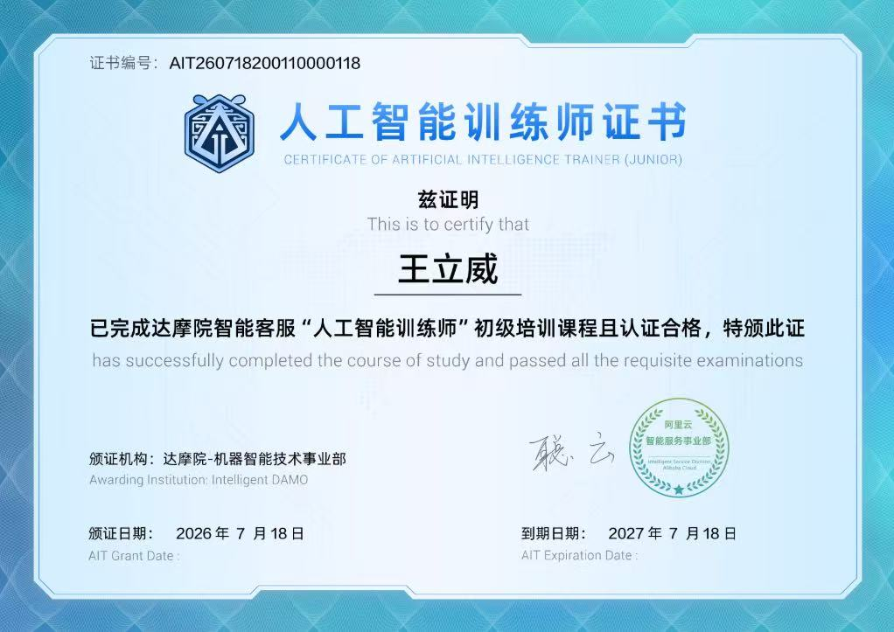
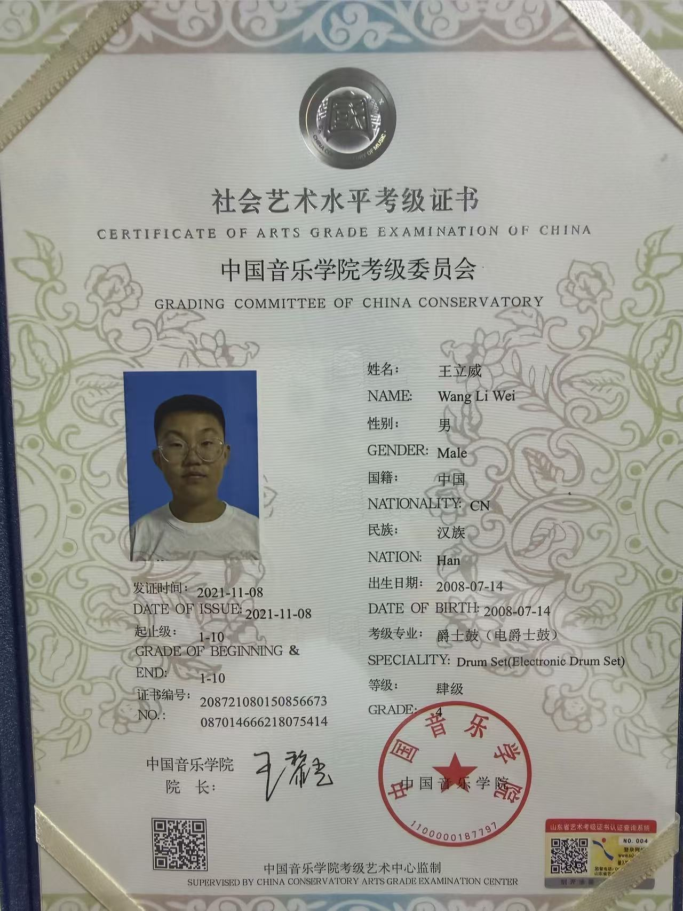
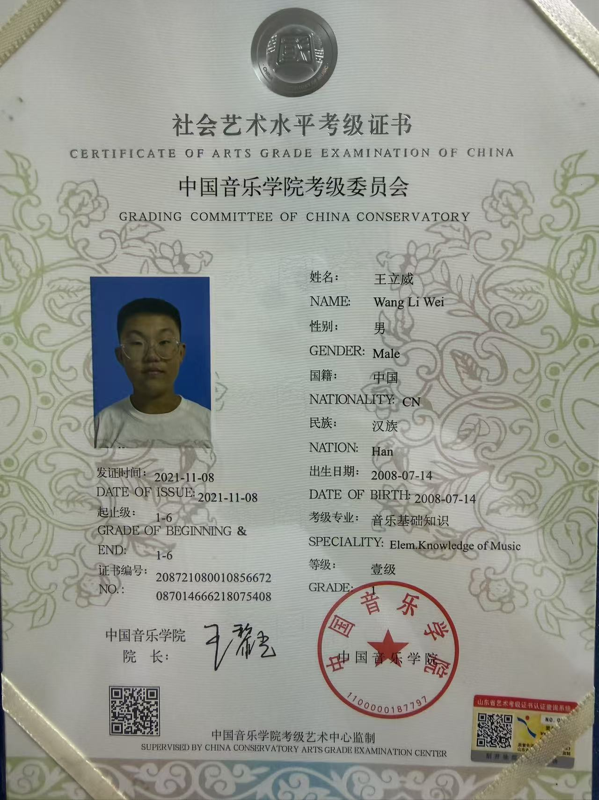

正在寻找学习与成长的机会
王立威 — 准大学生 · 经济工程
状态准大学生
院校·专业青岛理工·经济工程
星座♋ 巨蟹座
MBTIINTP
年轻就四件事 · 挣钱 · 见世面 · 交朋友 · 学本事
相关经历
华夏盛世有限公司
浪尖社区
青岛理工大学
华夏盛世有限公司
浪尖社区
青岛理工大学
技能与专长
我正在学习和使用的技术、工具与特长
编程与网络安全
入门扎实
了解编程基础知识，能运用多种语言开发；掌握一定的网络安全知识与 Kali Linux 渗透测试工具
JavaScriptPHPMySQLKali Linux网络安全
AI 创作与工具
熟练运用
在浪尖社区学习 AI 自主创作，熟练运用多种 AI 工具提升效率
WorkBuddyObsidian扣子 Coze
爵士鼓演奏
10 级
持有中国音乐学院爵士鼓 10 级证书，具备扎实的节奏感与音乐表现力
爵士鼓中国音乐学院10 级证书
房地产实务
实习经验
了解房地产抵押解押的相关知识和业务流程
抵押解押房地产业务流程
软技能与素养
自驱力
好奇心驱动，乐于跨学科探索新技术与新领域
自主学习创意思维跨学科
经历
从实习到求学 — 每一步都在成长
2026年7月
实习生
华夏盛世有限公司
北京
在北京华夏盛世有限公司实习一个月，深入了解房地产行业，特别是抵押与解押的相关知识和业务流程。
- ▸学习房地产抵押解押流程
- ▸了解房地产行业运作方式
- ▸积累职场实践经验
2026年7月
AI 创作学习
浪尖社区
线上社区
在浪尖社区系统学习如何运用 AI 进行自主创作，熟练掌握多种 AI 工具，培养高效的内容生产与知识管理能力。
- ▸熟练运用 WorkBuddy
- ▸掌握 Obsidian 知识管理
- ▸使用扣子 (Coze) 搭建工作流
2026 — （即将入学）
经济工程 · 准大学生
青岛理工大学
青岛，山东
即将就读青岛理工大学经济工程专业，期待在大学期间深入学习经济学与工程学的交叉领域。
- ▸专业: 经济工程
- ▸学校: 青岛理工大学
- ▸状态: 准大学生
技能认证
证书与认证
阿里云 AI 认证、人工智能训练师证书与爵士鼓考级证书
阿里云 Apsara Clouder
大模型 Clouder 认证：基于通义灵码实现高效 AI 编码实践
阿里云 Apsara Clouder
大模型 Clouder 认证：基于百炼平台构建智能体应用
阿里云 Apsara Clouder
大模型 Clouder 认证：基于百炼平台构建智能体应用
阿里云 Apsara Clouder
大模型 Clouder 认证：Spring AI 应用开发（入门）
阿里云 Apsara Clouder
人工智能 Clouder 认证：VISION 人工智能设计（进阶）
阿里云 Apsara Clouder
人工智能 Clouder 认证：VISION 人工智能设计（进阶）

达摩院 - 机器智能技术事业部
人工智能训练师证书（初级）
达摩院 - 机器智能技术事业部
人工智能训练师证书（高级）

中国音乐学院考级委员会
社会艺术水平考级证书：爵士鼓（电爵士鼓）1-10 级

中国音乐学院考级委员会